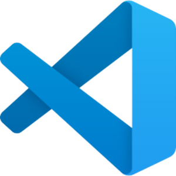
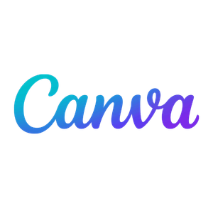
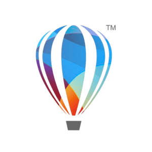
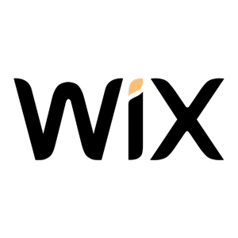

Gastón Jaureguiberry
Desarrollador web con enfoque en crear soluciones digitales funcionales, claras y orientadas a resultados.
Combino desarrollo, diseño y marketing para construir experiencias digitales que aportan valor real a los negocios.
Combino desarrollo, diseño y marketing para construir experiencias digitales que aportan valor real a los negocios.
Desarrollador web con enfoque en aprendizaje constante y mejora continua. Experiencia en marketing y comunicación, lo que me permite comprender necesidades de negocio y trasladarlas a soluciones digitales funcionales. Interesado en formar parte de equipos donde pueda seguir creciendo profesionalmente y aportar valor a través del desarrollo web.
Desarrollador web en formación con base en marketing y comunicación, lo que me permite entender tanto la parte técnica como los objetivos de negocio detrás de cada proyecto. Me enfoco en crear soluciones digitales simples, funcionales y bien estructuradas, priorizando la experiencia del usuario y la claridad en cada desarrollo. Actualmente continúo formándome en tecnologías web mientras desarrollo proyectos propios y freelance.
Desarrollo de páginas y aplicaciones web utilizando HTML, CSS y JavaScript. Proyectos orientados a resolver necesidades concretas como gestión de pedidos, reservas y presencia digital para negocios.
Ver proyectosCreación de identidad visual, branding y piezas gráficas alineadas a objetivos de comunicación. Trabajo en desarrollo de marcas, contenido para redes y material visual enfocado a cada objetivo.
Ver diseños
Desarrollo de soluciones digitales para emprendedores y negocios.
Diseño gráfico y contenido para redes.
Desarrollo de páginas web, menús digitales y sistemas básicos.




Encargado de Comunicación y Marketing
Fechas: 2017/2022
Ejecutivo de Marketing para la cadena.
Fechas: 2017/2022
Ejecutivo de Marketing y eventos
Fechas: 2013/2016
• Diseño para redes sociales
• Desarrollo de páginas web
• Landing pages para negocios
• Branding e Identidad visual
• Optimización de presencia digital
Programas y tecnologías que utilizo habitualmente:
💻 Desarrollo Web: HTML, CSS, JavaScript, VS Code, Wix, WordPress
🎨 Diseño gráfico: Canva, CorelDraw, Adobe Illustrator
📈 Marketing y comunicación: Gestión de redes, Plan de marketing.
Abierto a oportunidades laborales y proyectos freelance. No dudes en contactarme.